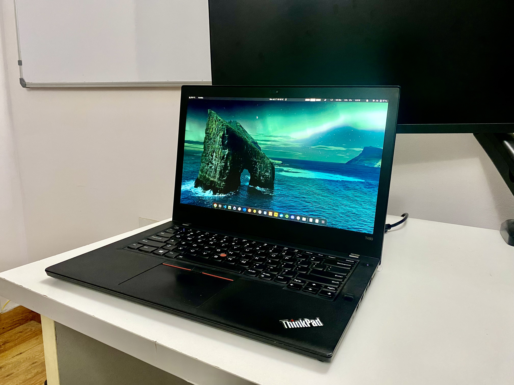

Development Setup with Ubuntu on ThinkPad T480
Contents
After using Arch Linux for about 4 years, and various Linux distros like Mint and Debian before that, I have finally decided to settle with Ubuntu. I have been using Ubuntu for about 6 months now and it’s a great distro for Computer Engineering.
Is it the best distro for development?
I am not saying it’s perfect, it’s slow at times(especially snap apps), and it’s hard to back up and restore. Linux in general is not very well supported by proprietary software vendors, as no official desktop apps are available for some of the most popular services like Notion(Which I use alot, and has apps for both Mac and Windows).
Some might say that’s not the philosophy of Linux, but I am not a purist. I believe in being productive and getting things done, in the most efficient way possible. Which also raises the question that why I am using Linux in the first place? which required a lot of tinkering and time investment.
The reason I love Linux and still use it, instead of just using MacOS, which is a great OS too for developers(I use that for work). Is because it teaches you a lot about how computers work, and how to use them efficiently. It’s a great learning experience, and it’s fun. I loved it the first time I got my hands on it, and I still do.
Well, let’s come back to the topic. Ubuntu is stable, easy to use, comes with support for most of the hardware out of the box, has a huge community, and it’s easy to find solutions to most of the problems you might face. Which makes it a great distro for daily use, and development for me.
Hardware
I use pretty modest hardware, and I don’t do any heavy lifting on my machine. I mostly use it for writing code, and browsing the web. So, I don’t need a lot of power. I have a Thinkpad T480, with 32GB RAM, 512GB SSD, Intel i7-8550U, and Nvidia MX150. I use the integrated graphics most of the time, and only use the Nvidia GPU when required.

Setup
I have installed Ubuntu 22.04 LTS on my machine, and I am using the default Gnome desktop environment.
I try to keep most of the settings default and only change the things that I find not suitable for my workflow. I made no changes to GNOME settings, just switch to the dark mode.
Arch Wiki
I am not using Arch Linux anymore, but I still use Arch Wiki for most things. It’s the best documentation for Linux, and it’s very well written.
We will look at the compatibility of Linux with my hardware, and then we will install the required drivers and software. Here is the wiki for Thinkpad T480.
CPU Throttling
Thinkpad with Linux has throttling issues, and the CPU is not able to reach its full potential. We can fix this by installing throttled
Fingerprint Reader
Thinkpad T480 has a fingerprint reader, which can be used to log in to the system. However, it’s not supported by Ubuntu out of the box. You can find instructions on the wiki to fix this.
Battery Optimization
Thinkpad T480 has two batteries, one internal and one external. The external battery is hot-swappable, which means you can remove it without shutting down the system.
We will use tlp to optimize the battery life. I did a recalibration of the battery to better estimate the battery life.
Extensions & Settigns
|
|
I have installed the following extensions: - Clipboard Indicator - EasyScreenCast - Impatience - OpenWeather - Vitals - WinTile
Post this, I go to tweaks and make the following changes:
Fonts
- Interface Text: Nimbus Sans Regular 11
- Document Test: Sans Regular 11
- Monospace Text: Noto Mono Regular 11
- Legacy Window Titles: Nimbus Sans Bold 11
Here, we don’t need to install any fonts, as Ubuntu comes with all the fonts we need.
Appearance
- Applications: Yaru-olive-dark
- Cursor: DMZ-Black
- Icons: Yaru-olive-dark
Top Bar
- Weekday: Enabled
- Date: Enabled
- Seconds: Enabled
Display
- Add backup wallpapers to the list
- Night Light: Sunset to Sunrise
Enabled
Preload
To speed up the boot time, we can enable preload.
|
|
Applications & Packages
Chrome
I prefer to use Chrome instead of Chromium, as it allows me to sync my bookmarks and other data across devices.
Git
|
|
Bleachbit
|
|
Font Manager
|
|
ZSH
|
|
VIM
|
|
Tmux
|
|
Docker
|
|
Other Important Packages
|
|
Snap Packages
Snap isn’t the best choice for Linux, as it’s known to have a slow startup time. An alternative can be to use Flatpak. But that doesn’t support auto-update. So, for now, I am living with Snap
- VLC
- Spotify
- Slack
- Pycharm-community
- postman
- ngrok
- miro
- kubectl
- kontena-lens
- helm
- heroku
- goland
- go
- drawio
- discord
- beekeeper-studio
Some of the above packages will require login to sync data across devices.
That’s it, this is my setup. I will keep updating this post as I make changes to my setup.